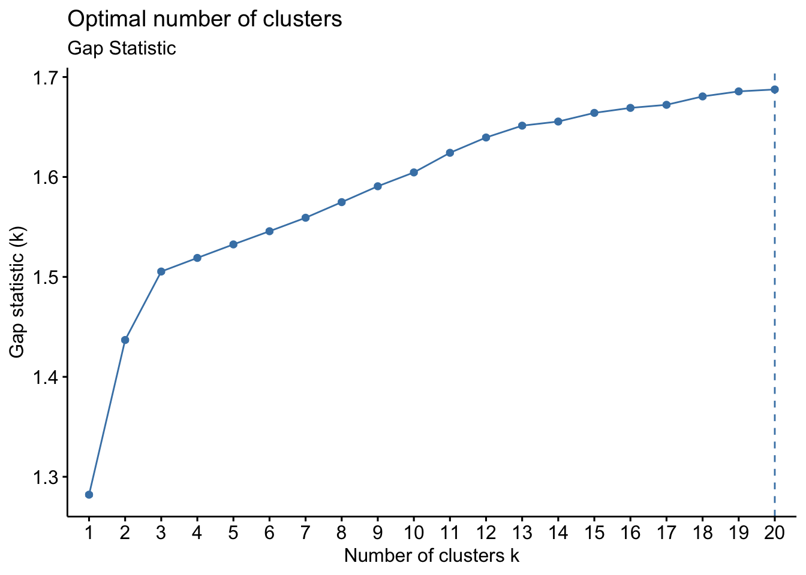
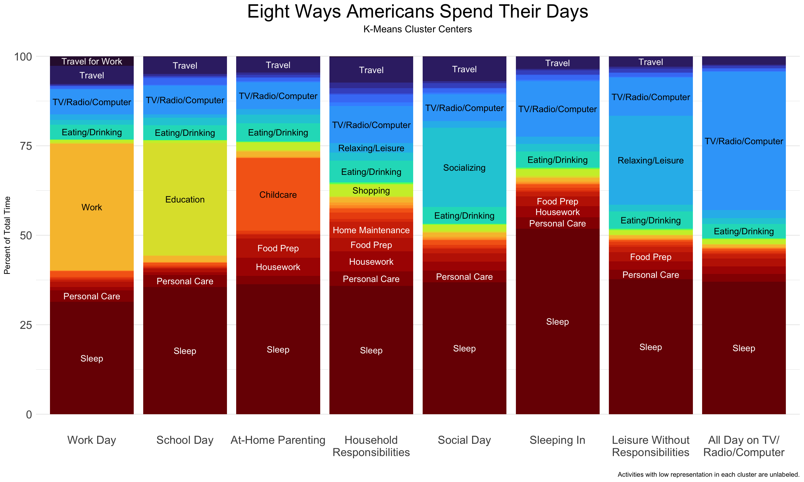
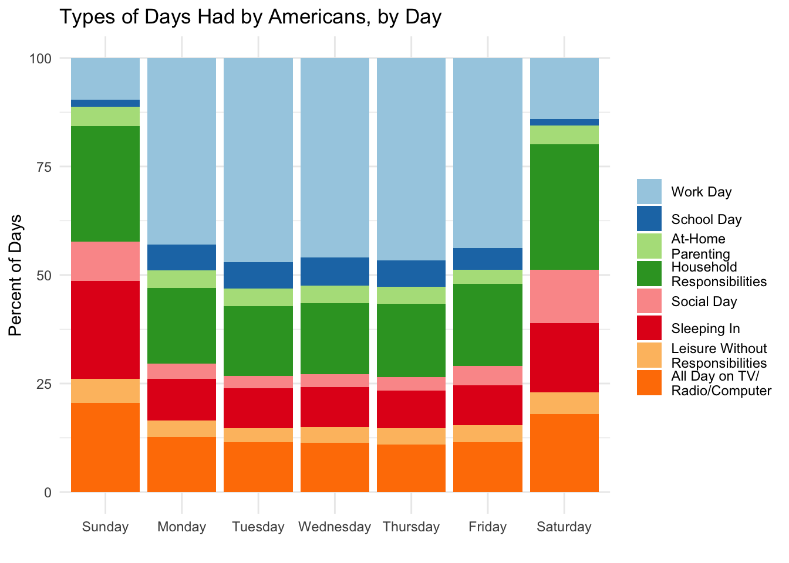
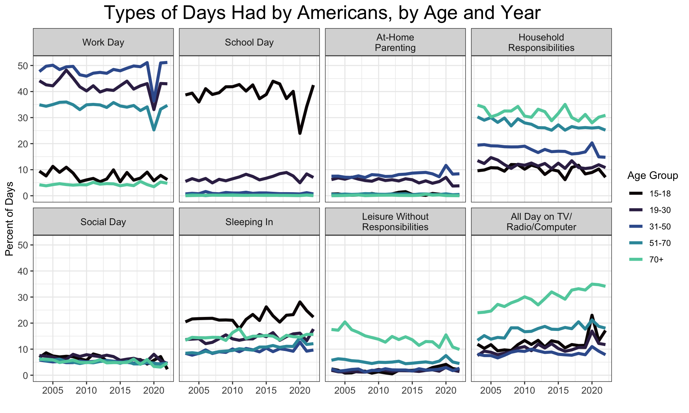

Americans Have Eight Kinds of Days
R
Clustering
Open Data
The American Time Use Survey takes a wide sample of Americans and interviews them in great detail about what they did the day before. They have done this each year going back to 2003. With a little discretion, I can group the activities into broader categories and produce the following graph:
There is a lot to unpack in this graph. I may come back to some of the trends here in future posts, but right now I want to take an entirely different approach to the data: cluster analysis.
Tip
Code for this article is available here.
Looking at average daily hours spent is enlightening, but it obscures the fundamental experience of time-use: What kinds of days do Americans have? A 1 hour-a-day average for socializing could mean that every American spends one hour each day socializing, or it could mean that 5% of Americans spend 20 hours a day socializing and the rest don’t socialize at all. It could also mean that half of Americans spend 7 hours a day socializing on weekends, and the rest don’t socialize at all. My point: Averages don’t tell us much about the ways in which individual Americans spend their days.
Cluster analysis can solve this problem. Clustering is a family of machine learning techniques that ask the question: What types of cases are there? It can help us say things like “There are two kinds of people in the world…” or “There are three types of days that Americans have”.
I will be using the k-means clustering algorithm - probably the most popular clustering method. Given the number of clusters k, it finds a “center” for each cluster - the average of all cases in the cluster - so that each case is assigned to its nearest center. This makes it very easy to visualize the clusters, since each cluster’s center is the paradigmatic example for all of its members. But k-means does have one tricky aspect: The algorithm only figures out what the clusters are like, not how many of them there should be. The right number of clusters needs to be figured out in advance.
A popular, sophisticated method for finding the optimal number of clusters (the optimal k) is the gap statistic method, introduced by Tibshirani et al. (Standford University, 2001). This metric compares the total within-cluster dispersion for each k (how spread out the cluster members are) with the dispersion that could be expected if the data were totally random and uncluttered. The “gap” is the difference between these two numbers. The chosen number of clusters is the lowest one for which one higher would result in a significantly smaller gap.
Running this algorithm on a subset of the time use data results in the following graph:

The maximum gap statistic is identified here at k = 20, the maximum k tested. Nevertheless, it is clear from the full graph that 3 is the lowest reasonable number of clusters. A pattern similar to this, in which the gap statistic continues to rise after an initial local maximum, is discussed by Tibshirani et al. in the original paper:
In cases where there are smaller subclusters within larger well-separated clusters, it can exhibit non-monotone behaviour. Hence it is important to examine the entire gap curve rather than simply to find the position of its maximum.
In our case, this means that there are a lot of fine distinctions in the ways people spend their days, but k = 3 may be a good start for a very general breakdown. For now then, there are three types of days that Americans have!
I’ve named the three clusters “Leisure With Responsibilities”, “Leisure Without Responsibilities”, and “Work Day.” A day of leisure with responsibilities has basically no work and a fair amount of relaxing, watching TV, or surfing the internet, but it also has time spent caring for children, preparing food, and doing housework. It also has a notable amount of socializing. A day of leisure without responsibilities is similar, but with none of the household responsibilities and none of the socializing. Almost all time not spent sleeping or eating is spent relaxing and in front of the TV or computer. A work day has about 8 hours of work, but otherwise looks more similar to the day of leisure with responsibilities, minus the housework and home maintenance.
How are the clusters distributed over the week?
Sure enough, workdays in America mostly happen from Monday through Friday. On weekends, Americans tend to have days of leisure with responsibilities. The proportion of leisure without responsibilities also goes up a bit on weekends, but not dramatically. I get the sense that the kind of people who have days of leisure without responsibilities are often not the kind of people who have day jobs. Can we see this with a breakdown by age group?
Sure enough, the most avid practitioners of leisure without responsibilities are senior citizens. Children under 18 also have a few more of those than the working-age adults, but not much. This suggests to me that the algorithm has identified school days as leisure with responsibilities. To investigate this possibility further, it may be worthwhile to try out a breakdown into more clusters. Before I do that, though, I’d like to recreate the first graph in this post, but now with types of days instead of averages for individual activities.
If you squint, the 2008 financial crisis is recognizable as a drop in workdays and rise in days of leisure without responsibilities. COVID is even more dramatic. The 2020 fall in days of leisure with responsibilities among children under 18 confirms my suspicion that school days count.
Interestingly, there looks to be a steady rise in days of leisure without responsibilities, especially among the elderly. This is accompanied by a steady decline in days of leisure with responsibilities across all age groups.
To see some finer detail, I’d like to re-cluster with a higher k and see what it comes up with. I’m not sure I could make sense of 18 different categories, so I’ll chose k = 8.

Here is the school day in its full glory! Now we also have two types of leisure days without responsibilities, a parenting day, a non-parental household responsibilities day, a day of socializing, and a day with extra sleep.

We can now see that school days and work days both tend to happen on Monday through Friday. Days of extra sleeping happen most often on Sundays, likely reflecting a sleep deficit from the work week. Social days are most common on Saturdays.

Again we see the prominent 2020 drop in both school days (for children) and work days (for working-age people), corresponding with a rise in days of leisure of all sorts. It looks like the younger people in 2020 spiked more dramatically toward days of TV/Radio/Computer use, whereas older people found other ways to kick back. The slow trends are more interesting though. Days of household responsibilities are clearly on a long and slow decline, as are days of socializing. Days of sleeping in look to be on the rise. Again the slow rise in days of leisure without responsibilities is most evident among the elderly, but not all days of leisure without responsibilities - only ones spend entirely on the TV/Radio/Computer. The other sort of leisure days are on the decline.
I’m curious to see the same graph, but broken up by income rather than age.
This looks like all the trends observed above are true of all income brackets. Looking at these together with the individual-activity graph from the beginning of this post, the most dramatic long-term trends are:
- A fall in days of household responsibilities, corresponding to the falls in average time spent on home maintenance, shopping, and housework (though food prep is on the rise).
- A fall in days of socializing, corresponding to a fall in time spent socializing generally. We should be careful with this one though, since “socializing” here only includes time explicitly devoted to socializing. In practice of course, a fair bit of socializing happens at work, school, or during other activities. In particular, the internet has become an increasingly social place during the time period under investigation here.
- Rise in days of TV/computer use, especially for the elderly. This corresponds to a rise in average time spent watching TV, listening to the radio, or on the computer.
- Also, it looks like people with higher income sleep in less. Is this because their jobs are less exhausting? Or because their jobs are more regular, so they have no time to sleep in?
Finally, I wonder how these clusters are distributed between sexes.
# Cluster membership cby gender
d_major %>%
select(!sleep:work_travel) %>%
mutate(
sex = case_when(TESEX == 1 ~ "Male",
TESEX == 2 ~ "Female",
.default = NA),
cluster = c("Social Day", "Work Day", "School Day", "At-Home\nParenting", "Sleeping In", "All Day on TV/\nRadio/Computer", "Leisure Without\nResponsibilities", "Household\nResponsibilities")[k_means_8$cluster],
cluster = factor(cluster, levels = c("Work Day", "School Day", "At-Home\nParenting", "Household\nResponsibilities", "Social Day", "Sleeping In", "Leisure Without\nResponsibilities", "All Day on TV/\nRadio/Computer"))
) %>%
group_by(TUYEAR, sex, cluster) %>%
summarise(n = sum(TUFNWGTP)) %>%
group_by(TUYEAR, sex) %>%
mutate(cluster = cluster,
percent = 100*n/sum(n)) %>%
ggplot(aes(TUYEAR, percent, color = sex)) +
geom_line(linewidth = 1.5) +
scale_x_continuous(breaks = seq(2000, 2020, 5)) +
viridis::scale_color_viridis(discrete=TRUE, option="mako", end = .8) +
labs(title = "Types of Days Had by Americans, by Sex and Year",
x = "", y = "Percent of Days", color = "Sex") +
facet_wrap(~cluster, nrow = 2) +
theme_bw() +
theme(plot.title = element_text(size = 20, hjust = .5),
axis.text = element_text(size = 10),
strip.text = element_text(size = 10))`summarise()` has grouped output by 'TUYEAR', 'sex'. You can override using the
`.groups` argument.Males have more workdays, and more days spent entirely on the TV/Radio/Computer. Females have more parenting days and more days of household responsibilities. Females look to have slighty more social days than males do, but not by much. In 2020, males increased their days doing household responsibilities more than did females, presumably since household responsibilities replaced their workdays. This is all basically what I expected. Interestingly, it does look like females are increasing their days sleeping in faster than are males. I don’t have a good explanation for why that might be.